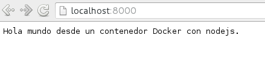
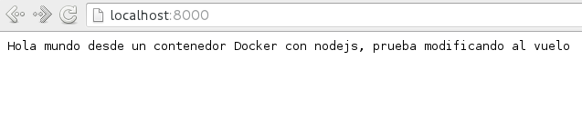

Crear un entorno de Integración y Despligue continue con Docker para node.js
Posted on Sat 26 March 2016 in Tutorial Python • 3 min read
Continuando con los artículos de Docker, está vez se muestra como tener un entorno de integración continua CI y de despliegue continuo CD con Docker para una aplicación web con node.js.
Los artículos anteriores sobre Docker son:
1. Instalar Docker en Debian Jessie
2. Uso de Docker en Debian Jessie (parte 1)
3. Uso de Docker en Debian Jessie (parte 2)
4. Crear una imagen Docker a partir de un archivo Dockerfile
5. Iniciando Django usando Docker
6. Instalar Gitlab por medio de Docker
7. Ejecutando microservicios con docker usando docker-compose
8. Docker en Docker (DinD)
9. Iniciando Django con docker usando docker-compose con postgresql como microservicio.
10. Importar un contenedor Docker en Python.
11. Compartir imagenes Docker por medio de archivos tar.
12. Crear un registro de imagenes Docker privado.
13. Usar Anaconda desde un contenedor Docker.
Se creo un directorio llamado nodejs que contendrá lo siguiente:
nodejs
├── app.js
├── Dockerfile
└── package.json
Dentro del directorio se tiene el archivo javascript llamado app.js, se tiene el archivo Dockerfile y el otro el package.json.
El archivo app.js contiene lo siguiente:
// se crea la instancia de http
var http = require('http');
// Se crea la instancia del servidor donde se define el tipo del Content-type como text/plain
//Devuelve un hola mundo particular.
var server = http.createServer(function (request, response) {
response.writeHead(200, {"Content-Type": "text/plain"});
response.end("Hola mundo desde un contenedor Docker con nodejs.");
});
//El servidor escuchará el puerto 8000.
server.listen(8000);
//se devuelve un mensaje en la consola que se ejecuta el servidor web.
console.log("Server running at http://127.0.0.1:8000/");
El archivo package.json contiene lo siguiente:
{
"name": "hola-mundo",
"description": "hola mundo",
"version": "0.0.1",
"private": true,
"dependencies": {
"express": "3.x"
},
"scripts": {"start": "node app.js"}
}
Se le da el nombre de la aplicación, su descripción, la versión, que es privada y en las dependencias se instala express la versión 3.x, por último el script inicia la aplicación app.js.
Ahora se explicará el archivo Dockerfile:
FROM google/nodejs
MAINTAINER Ernesto Crespo <ecrespo@gmail.com>
WORKDIR /app
ADD package.json /app/
RUN npm install
ADD . /app
EXPOSE 8000
CMD []
ENTRYPOINT ["/nodejs/bin/npm", "start"]
Se descargará nodejs del repositorio que maneja google, se define el mantenedor de la imagen, el directorio de trabajo es /app, se agrega el archivo package.json al directorio de trabajo, se ejecuta npm install, se agrega el directorio app que se encuentra en la estructura de directorio ya explicada, se expone el puerto 8000, CMD se pasa [] y el entrypoint inicia npm. .
Para construir la imagen se ejecuta:
docker build -t nodejs_img .
Al ejecutar docker images se tiene la imagen nodejs_img:
docker images
REPOSITORY TAG IMAGE ID CREATED SIZE
nodejs_img latest 38d1802c8726 About a minute ago 501.6 MB
Ahora se ejecuta el contenedor:
docker run -p 8000:8000 nodejs_img
> hola-mundo@0.0.1 start /app
> node app.js
Server running at http://127.0.0.1:8000/
Al abrir el navegador en esa dirección se tiene:

Se puede modificar el archivo app.js agregando lo siguiente:
var http = require('http');
var server = http.createServer(function (request, response) {
response.writeHead(200, {"Content-Type": "text/plain"});
response.end("Hola mundo desde un contenedor Docker con nodejs, prueba modificando al vuelo");
});
server.listen(8000);
console.log("Server running at http://127.0.0.1:8000/");
Se detiene el contenedor y se vuelve a ejecutar:
docker ps
CONTAINER ID IMAGE COMMAND CREATED STATUS PORTS NAMES
ee8395c6c1b0 nodejs_img "/nodejs/bin/npm star" 4 minutes ago Up 4 minutes 0.0.0.0:8000->8000/tcp clever_shirley
docker stop ee8395c6c1b0
ee8395c6c1b0
Para que se refleje los cambios del archivo app.js se reconstruye la imagen del docker y luego se vuelve a iniciar el contenedor:
docker build -t nodejs_img .
docker run -p 8000:8000 -v "$PWD":/app nodejs_img
> hola-mundo@0.0.1 start /app
> node app.js
Server running at http://127.0.0.1:8000/
Y al abrir el navegador en el url:

Se puede crear script para parar, borrar y reconstruir las imagenes haciendo más fácil el proceso de integración continua y despliegue continuo.
Más información la pueden conseguir en el artículo: Docker en la ejecución de test de integración en NodeJS
¡Haz tu donativo! Si te gustó el artículo puedes realizar un donativo con Bitcoin (BTC) usando la billetera digital de tu preferencia a la siguiente dirección: 17MtNybhdkA9GV3UNS6BTwPcuhjXoPrSzV
O Escaneando el código QR desde la billetera: